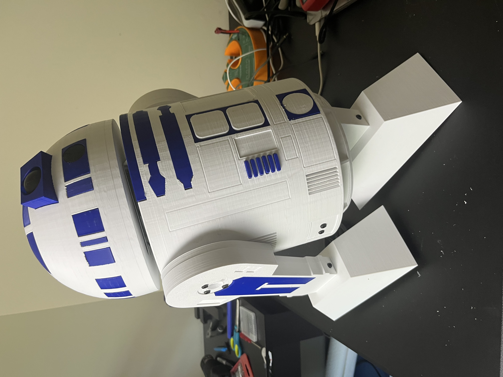

ROBOTICS / EMBEDDED / DIGITAL DESIGN
From logic.
To motion.
I’m Joel, an electrical engineering student at Georgia Tech. I build the systems that turn instructions into action — from processor RTL to robots on the workbench.

Mechanics meet embedded control.
SystemVerilog / KiCad / C++ / Onshape / Xcelium
01 / SELECTED WORK
Designed to be understood.
Built to learn from.
Four projects across digital logic, robotics, and electromechanical design. Explore the architecture and the decisions behind each build.
02 / THE ENGINEER BEHIND THE BUILDS
Curiosity starts it.
Iteration makes it work.
I like the part where a design leaves the screen and has to work in the real world.
My projects span processor design, custom electronics, and mechanisms. Building my own R2-D2 grew out of a love of Star Wars. Designing its electrical and mechanical systems turned that idea into a much deeper lesson in engineering.
At Georgia Tech, I’m bringing that same curiosity to digital hardware through SiliconJackets — learning how instructions become signals, and how those signals become useful work.
03 / LET’S CONNECT
Good engineering
starts with a
conversation.
Interested in robotics, embedded systems, or digital hardware? I’d love to talk about a project, an engineering opportunity, or something you’re building.
jbiswas33@gatech.edu